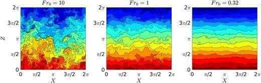
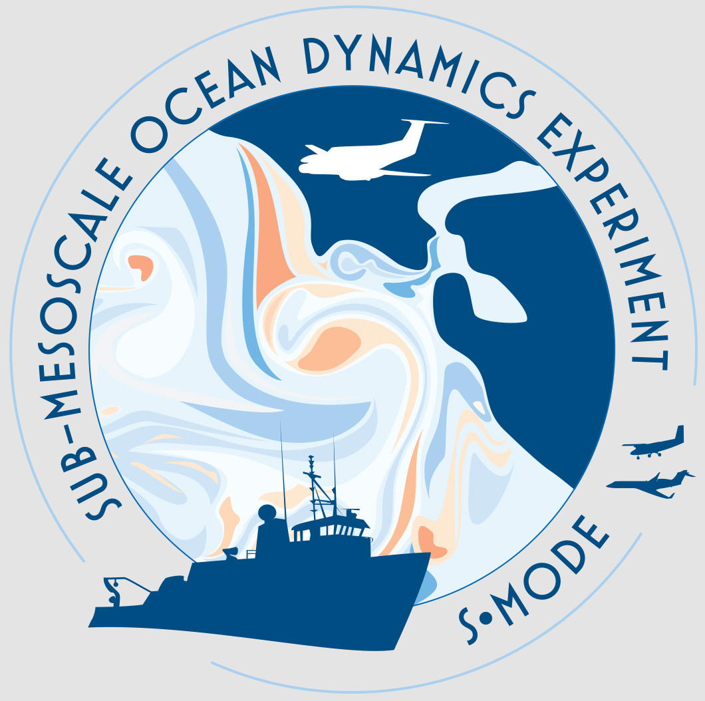
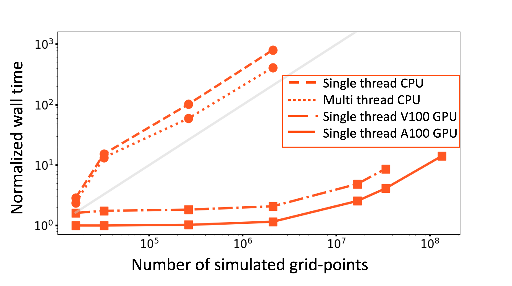

My Research
New boundary layer scheme for Earth system models

We developed a new physically-motivated mixing
scheme for OSBL turbulence by implimenting it in Model for Prediction Across Scales (MPAS-Ocean),
the ocean component of the U.S. Department of Energy (DOE)’s Energy Exascale Earth System Model (E3SM).
Results show that the proposed mixing scheme can simulate the OSBL physics due to byoyancy, wind, and wave forcing
efficiently suggesting its potential use in GCMs to help
reduce model biases. Read more...
Stratified turbulence through Direct Numerical Simulations

This study performs DNS of stably stratified turbulence to better understand flow dynamics & mixing, prodives physics-based improved parameterizations of diapycnal mixing
and infering it with measurable quantities providing implications for practical applications.
Read more [1],
[2],
[3]...
Air-sea interaction through satellite observation and in-situ data


My work in NASA's Sub-Mesoscale Ocean Dynamic Experiments (S-MODE), as a member of air-sea interaction working group and
velocity working group within this multi-institutional collaborating project focuses understanding flux estimates and
associated SST and ocean current response for improving ocean-atmosphere coupled model by better representing
the air-sea fluxes. I have also paricipated in ASIRI prohject to study subsurface mixing in BoB.
Read more
Large eddy simulations of Ocean on GPU platform

This study explores ocean simulatins by running LES (Oceananigans.jl) on different
GPU platform, including NVIDIA-GPUs, A100, V100, H100, and on Grace hopper at Oregon State University providing avenues for high-resolution simulations.
Read more
Mesoscale mixing through Lagrangian approch in high-rez Ocean model

In this study, we employed Lagrangian, in Situ, Global, High-performance Particle Tracking (LIGHT) package in high-resolution (eddy-resolving)
Model for Prediction Across Scales (MPAS-Ocean),
the ocean component of the U.S. Department of Energy (DOE)’s Energy Exascale Earth System Model (E3SM) to develop better parameterizations
of isopycnal diffusivity.
Read more...
Experimental Fluid Mechanics

This work involves the study of turbulent open-channel flows using Acoustic Doppler
Velocimetry (ADV) and Laser Doppler Anemometry (LDA). The experiments are conducted in a recirculating
flume at Colorado State University and interesting findings about sensor assessment are presented with
implications for practical applications.
Read more...